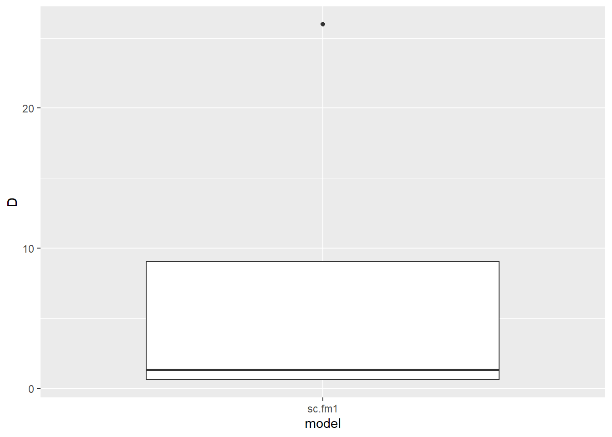
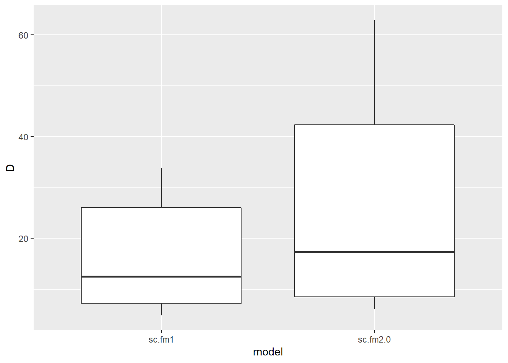
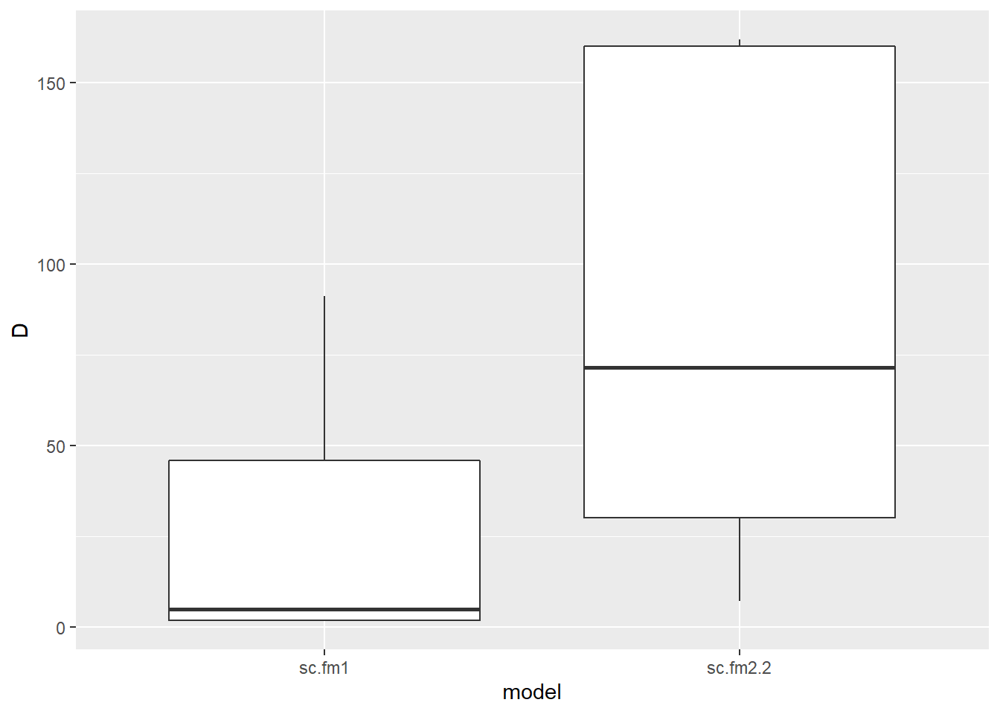
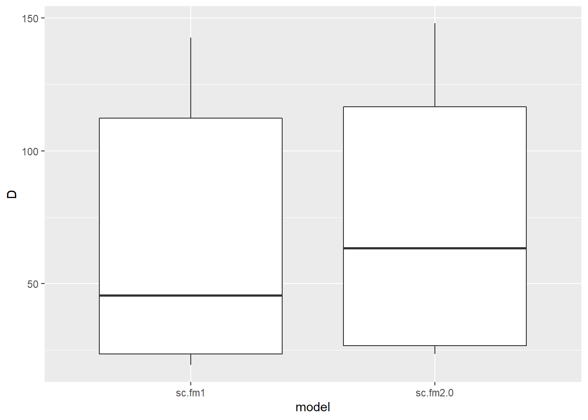

Models evaluated:
| model | description |
|---|---|
| sc.fm1 | dot model |
| sc.fm2.0 | lure |
| sc.fm2.1 | snow |
| sc.fm2.2 | temp |
| sc.fm2.3 | pass |
| sc.fm3.0 | lure + snow |
| sc.fm3.1 | lure + pass |
| sc.fm4.0 | lure + snow + temp |
| sc.fm4.2 | lure + snow + temp + pass |
| sc.fm5.0 | lure + snow + temp + pass + temp * snow |
| sc.fm5.1 | lure + snow + temp + pass + lure * snow |
model metadata:
| survey | n_sites | detections | rep_period | model_aggragate_reps | state_buffer | iterations | burnin | thin | sigma.mean | sigma.sd |
|---|---|---|---|---|---|---|---|---|---|---|
| Humphreys Basin | 31 | 11 | 7 days | 300 | 2.5 | 350000 | 20000 | 20 | 1.15 | 0.37 |
global models:
| model | covs | bayes_p_val | bayes_factor | revMCMC_constrained | revMCMC_unconstrained | revMCMC_noInteractions |
|---|---|---|---|---|---|---|
| sc.fm5.0 | lure | 0.62159 | 0.271 | 0.00109 | 0.0008485 | 0.0020000 |
| sc.fm5.0 | snow | 0.67267 | 0.151 | 0.00109 | 0.0004848 | 0.0007879 |
| sc.fm5.0 | temp | 0.96448 | 0.141 | 0.00048 | 0.0004848 | 0.0008485 |
| sc.fm5.0 | pass | 0.41529 | 0.971 | 0 | 0.0046667 | 0.0000000 |
| sc.fm5.0 | temp*snow | 0.98906 | 0.169 | 0 | 0.0009697 | NA |
| sc.fm5.1 | lure | 0.46551 | 0.415 | 0.00109 | 0.0008485 | 0.0020000 |
| sc.fm5.1 | snow | 0.80797 | 0.129 | 0.00109 | 0.0004848 | 0.0007879 |
| sc.fm5.1 | temp | 0.96044 | 0.133 | 0.00048 | 0.0004848 | 0.0008485 |
| sc.fm5.1 | pass | 0.44032 | 0.982 | 0 | 0.0046667 | 0.0000000 |
| sc.fm5.1 | lure*snow | 0.9609 | 0.146 | 0 | 0.0007273 | NA |
single covariate models:
| model | covs | bayes_p_val | bayes_factor | revMCMC_constrained | revMCMC_unconstrained | revMCMC_noInteractions |
|---|---|---|---|---|---|---|
| sc.fm2.0 | lure | 0.7182 | 0.190 | 0.00109 | 0.0008485 | 0.0020000 |
| sc.fm2.1 | snow | 0.65094 | 0.145 | 0.00109 | 0.0004848 | 0.0007879 |
| sc.fm2.2 | temp | 0.99546 | 0.107 | 0.00048 | 0.0004848 | 0.0008485 |
| sc.fm2.3 | pass | 0.43578 | 1.019 | 0 | 0.0046667 | 0.0000000 |
All models: Covariates with p values below .11 (bayesian p, probability covariate is not null)
| model | covs | bayes_p_val | bayes_factor | revMCMC_constrained | revMCMC_unconstrained | revMCMC_noInteractions |
|---|---|---|---|---|---|---|
parameter support:
| level | support | covariates |
|---|---|---|
| good | pval and rev MCMC | |
| moderate | pval or rev MCMC | |
| poor | neither | lure - snow - temp - pass - snow*temp - lure*snow |
models with significant covariates:
waic:
| model | description | WAIC |
|---|---|---|
| sc.fm1 | dot model | 104.0561 |
Density per 100km, significant models:
## Warning: The `x` argument of `as_tibble.matrix()` must have column names if `.name_repair` is omitted as of tibble 2.0.0.
## Using compatibility `.name_repair`.
## This warning is displayed once every 8 hours.
## Call `lifecycle::last_warnings()` to see where this warning was generated.
top models density per 100sq km, significant covariates:
| species | model | covs | n_effective | mode | hdi_89pct_lower | hdi_89pct_upper |
|---|---|---|---|---|---|---|
| AmericanBadger | sc.fm1 | D | 474 | 1.311 | 0.6 | 25.99 |
notes:
no covariate support
notes:
lure seems to be significant, but the top model (with lure) did not converge, more difficulty
with black bear and the sc model
model metadata:
| survey | n_sites | detections | rep_period | model_aggragate_reps | state_buffer | iterations | burnin | thin | sigma.mean | sigma.sd |
|---|---|---|---|---|---|---|---|---|---|---|
| Humphreys Basin | 31 | 42 | 7 days | 300 | 2.5 | 350000 | 20000 | 20 | 0.765 | 0.13 |
global models:
| model | covs | bayes_p_val | bayes_factor | revMCMC_constrained | revMCMC_unconstrained | revMCMC_noInteractions |
|---|---|---|---|---|---|---|
| sc.fm5.0 | lure | 0.02628 | 6.890 | 0.02764 | 0.0269697 | 0.0406061 |
| sc.fm5.0 | snow | 0.32365 | 0.172 | 0.00327 | 0.0029091 | 0.0028485 |
| sc.fm5.0 | temp | 0.65479 | 0.098 | 0.00018 | 0.0001818 | 0.0006667 |
| sc.fm5.0 | pass | 0.86411 | 0.196 | 0 | 0.0011515 | 0.0000000 |
| sc.fm5.0 | temp*snow | 0.65996 | 0.135 | 0 | 0.0004242 | NA |
| sc.fm5.1 | lure | 0 | 234.752 | 0.02764 | 0.0269697 | 0.0406061 |
| sc.fm5.1 | snow | 0.01174 | 5.292 | 0.00327 | 0.0029091 | 0.0028485 |
| sc.fm5.1 | temp | 0.50219 | 0.165 | 0.00018 | 0.0001818 | 0.0006667 |
| sc.fm5.1 | pass | 0.86027 | 0.182 | 0 | 0.0011515 | 0.0000000 |
| sc.fm5.1 | lure*snow | 0.04792 | 2.987 | 0 | 0.0004848 | NA |
single covariate models:
| model | covs | bayes_p_val | bayes_factor | revMCMC_constrained | revMCMC_unconstrained | revMCMC_noInteractions |
|---|---|---|---|---|---|---|
| sc.fm2.0 | lure | 0.02407 | 8.337 | 0.02764 | 0.0269697 | 0.0406061 |
| sc.fm2.1 | snow | 0.09465 | 0.596 | 0.00327 | 0.0029091 | 0.0028485 |
| sc.fm2.2 | temp | 0.92543 | 0.060 | 0.00018 | 0.0001818 | 0.0006667 |
| sc.fm2.3 | pass | 0.9093 | 0.189 | 0 | 0.0011515 | 0.0000000 |
All models: Covariates with p values below .11 (bayesian p, probability covariate is not null)
| model | covs | bayes_p_val | bayes_factor | revMCMC_constrained | revMCMC_unconstrained | revMCMC_noInteractions |
|---|---|---|---|---|---|---|
| sc.fm5.1 | lure | 0 | 234.752 | 0.02764 | 0.0269697 | 0.0406061 |
| sc.fm5.1 | snow | 0.01174 | 5.292 | 0.00327 | 0.0029091 | 0.0028485 |
| sc.fm3.1 | lure | 0.02146 | 8.388 | 0.02764 | 0.0269697 | 0.0406061 |
| sc.fm2.0 | lure | 0.02407 | 8.337 | 0.02764 | 0.0269697 | 0.0406061 |
| sc.fm5.0 | lure | 0.02628 | 6.890 | 0.02764 | 0.0269697 | 0.0406061 |
| sc.fm4.2 | lure | 0.03823 | 4.547 | 0.02764 | 0.0269697 | 0.0406061 |
| sc.fm4.0 | lure | 0.03893 | 4.717 | 0.02764 | 0.0269697 | 0.0406061 |
| sc.fm3.0 | lure | 0.04094 | 3.674 | 0.02764 | 0.0269697 | 0.0406061 |
| sc.fm5.1 | lure*snow | 0.04792 | 2.987 | 0 | 0.0004848 | NA |
| sc.fm2.1 | snow | 0.09465 | 0.596 | 0.00327 | 0.0029091 | 0.0028485 |
parameter support:
| level | support | covariates |
|---|---|---|
| good | pval and rev MCMC | |
| moderate | pval or rev MCMC | lure |
| poor | neither | snow - temp - pass - snow*temp - lure*snow |
models with significant covariates:
waic:
| model | description | WAIC |
|---|---|---|
| sc.fm2.0 | lure | 297.824 |
| sc.fm1 | dot model | 298.259 |
Density per 100km, significant models:

top models density per 100sq km, significant covariates:
| species | model | covs | n_effective | mode | hdi_89pct_lower | hdi_89pct_upper |
|---|---|---|---|---|---|---|
| AmericanMarten | sc.fm2.0 | D | 900 | 17.299 | 6.04 | 62.85 |
| AmericanMarten | sc.fm2.0 | lure | 15611 | -0.818 | -1.53 | -0.31 |
notes:
moderate support for lure, too much to ignore
better estimate with the dot model.. but cant really justify ignoring waic
model metadata:
| survey | n_sites | detections | rep_period | model_aggragate_reps | state_buffer | iterations | burnin | thin | sigma.mean | sigma.sd |
|---|---|---|---|---|---|---|---|---|---|---|
| Humphreys Basin | 31 | 10 | 7 days | 300 | 2.5 | 350000 | 20000 | 20 | 1.175 | 0.14 |
global models:
| model | covs | bayes_p_val | bayes_factor | revMCMC_constrained | revMCMC_unconstrained | revMCMC_noInteractions |
|---|---|---|---|---|---|---|
| sc.fm5.0 | lure | 0.99579 | 0.129 | 0.00079 | 0.0015152 | 0.0015758 |
| sc.fm5.0 | snow | 0.59088 | 0.462 | 0.00824 | 0.0101818 | 0.0122424 |
| sc.fm5.0 | temp | 0.21206 | 1.188 | 0.54261 | 0.5366667 | 0.6448485 |
| sc.fm5.0 | pass | 0.96952 | 0.251 | 0 | 0.0024242 | 0.0000606 |
| sc.fm5.0 | temp*snow | 0.93075 | 0.307 | 0 | 0.0194545 | NA |
| sc.fm5.1 | lure | 0.98502 | 0.172 | 0.00079 | 0.0015152 | 0.0015758 |
| sc.fm5.1 | snow | 0.43507 | 0.609 | 0.00824 | 0.0101818 | 0.0122424 |
| sc.fm5.1 | temp | 0.00297 | 46.505 | 0.54261 | 0.5366667 | 0.6448485 |
| sc.fm5.1 | pass | 0.99335 | 0.273 | 0 | 0.0024242 | 0.0000606 |
| sc.fm5.1 | lure*snow | 0.6408 | 0.264 | 0 | 0.0011515 | NA |
single covariate models:
| model | covs | bayes_p_val | bayes_factor | revMCMC_constrained | revMCMC_unconstrained | revMCMC_noInteractions |
|---|---|---|---|---|---|---|
| sc.fm2.0 | lure | 0.96054 | 0.134 | 0.00079 | 0.0015152 | 0.0015758 |
| sc.fm2.1 | snow | 0.09121 | 3.082 | 0.00824 | 0.0101818 | 0.0122424 |
| sc.fm2.2 | temp | 0.00096 | 177.180 | 0.54261 | 0.5366667 | 0.6448485 |
| sc.fm2.3 | pass | 0.91793 | 0.289 | 0 | 0.0024242 | 0.0000606 |
All models: Covariates with p values below .11 (bayesian p, probability covariate is not null)
| model | covs | bayes_p_val | bayes_factor | revMCMC_constrained | revMCMC_unconstrained | revMCMC_noInteractions |
|---|---|---|---|---|---|---|
| sc.fm2.2 | temp | 0.00096 | 177.180 | 0.54261 | 0.5366667 | 0.6448485 |
| sc.fm5.1 | temp | 0.00297 | 46.505 | 0.54261 | 0.5366667 | 0.6448485 |
| sc.fm4.2 | temp | 0.00367 | 34.741 | 0.54261 | 0.5366667 | 0.6448485 |
| sc.fm4.0 | temp | 0.00551 | 47.815 | 0.54261 | 0.5366667 | 0.6448485 |
| sc.fm2.1 | snow | 0.09121 | 3.082 | 0.00824 | 0.0101818 | 0.0122424 |
| sc.fm3.0 | snow | 0.10523 | 2.593 | 0.00824 | 0.0101818 | 0.0122424 |
parameter support:
| level | support | covariates |
|---|---|---|
| good | pval and rev MCMC | temp |
| moderate | pval or rev MCMC | |
| poor | neither | lure - snow - pass - snow*temp - lure*snow |
models with significant covariates:
waic:
| model | description | WAIC |
|---|---|---|
| sc.fm2.2 | temp | 96.27115 |
| sc.fm1 | dot model | 106.35869 |
Density per 100km, significant models:

top models density per 100sq km, significant covariates:
| species | model | covs | n_effective | mode | hdi_89pct_lower | hdi_89pct_upper |
|---|---|---|---|---|---|---|
| Bobcat | sc.fm2.2 | D | 595 | 71.639 | 7.25 | 161.95 |
| Bobcat | sc.fm2.2 | temp | 15479 | 1.376 | 0.76 | 2.23 |
notes:
model metadata:
| survey | n_sites | detections | rep_period | model_aggragate_reps | state_buffer | iterations | burnin | thin | sigma.mean | sigma.sd |
|---|---|---|---|---|---|---|---|---|---|---|
| Humphreys Basin | 31 | 188 | 7 days | 300 | 2.5 | 350000 | 20000 | 20 | 0.865 | 0.205 |
global models:
| model | covs | bayes_p_val | bayes_factor | revMCMC_constrained | revMCMC_unconstrained | revMCMC_noInteractions |
|---|---|---|---|---|---|---|
| sc.fm5.0 | lure | 0.01823 | 3.205 | 0.05776 | 0.0603636 | 0.0868485 |
| sc.fm5.0 | snow | 0.02881 | 1.004 | 0.00236 | 0.0018788 | 0.0032121 |
| sc.fm5.0 | temp | 0.96754 | 0.032 | 6e-05 | 0.0003030 | 0.0002424 |
| sc.fm5.0 | pass | 0.10739 | 0.944 | 0 | 0.0041818 | 0.0000000 |
| sc.fm5.0 | temp*snow | 0.02378 | 2.188 | 0 | 0.0550303 | NA |
| sc.fm5.1 | lure | 0 | 170.277 | 0.05776 | 0.0603636 | 0.0868485 |
| sc.fm5.1 | snow | 0.01763 | 1.536 | 0.00236 | 0.0018788 | 0.0032121 |
| sc.fm5.1 | temp | 0.24908 | 0.124 | 6e-05 | 0.0003030 | 0.0002424 |
| sc.fm5.1 | pass | 0.15406 | 0.634 | 0 | 0.0041818 | 0.0000000 |
| sc.fm5.1 | lure*snow | 0.14597 | 0.283 | 0 | 0.0001212 | NA |
single covariate models:
| model | covs | bayes_p_val | bayes_factor | revMCMC_constrained | revMCMC_unconstrained | revMCMC_noInteractions |
|---|---|---|---|---|---|---|
| sc.fm2.0 | lure | 0.00286 | 10.946 | 0.05776 | 0.0603636 | 0.0868485 |
| sc.fm2.1 | snow | 0.09541 | 0.234 | 0.00236 | 0.0018788 | 0.0032121 |
| sc.fm2.2 | temp | 0.72843 | 0.035 | 6e-05 | 0.0003030 | 0.0002424 |
| sc.fm2.3 | pass | 0.12428 | 0.825 | 0 | 0.0041818 | 0.0000000 |
All models: Covariates with p values below .11 (bayesian p, probability covariate is not null)
| model | covs | bayes_p_val | bayes_factor | revMCMC_constrained | revMCMC_unconstrained | revMCMC_noInteractions |
|---|---|---|---|---|---|---|
| sc.fm4.0 | lure | 0 | 44.457 | 0.05776 | 0.0603636 | 0.0868485 |
| sc.fm5.1 | lure | 0 | 170.277 | 0.05776 | 0.0603636 | 0.0868485 |
| sc.fm4.2 | lure | 0.00043 | 44.842 | 0.05776 | 0.0603636 | 0.0868485 |
| sc.fm3.0 | lure | 0.00125 | 20.976 | 0.05776 | 0.0603636 | 0.0868485 |
| sc.fm2.0 | lure | 0.00286 | 10.946 | 0.05776 | 0.0603636 | 0.0868485 |
| sc.fm3.1 | lure | 0.00372 | 13.576 | 0.05776 | 0.0603636 | 0.0868485 |
| sc.fm5.1 | snow | 0.01763 | 1.536 | 0.00236 | 0.0018788 | 0.0032121 |
| sc.fm5.0 | lure | 0.01823 | 3.205 | 0.05776 | 0.0603636 | 0.0868485 |
| sc.fm5.0 | temp*snow | 0.02378 | 2.188 | 0 | 0.0550303 | NA |
| sc.fm3.0 | snow | 0.02633 | 0.943 | 0.00236 | 0.0018788 | 0.0032121 |
| sc.fm5.0 | snow | 0.02881 | 1.004 | 0.00236 | 0.0018788 | 0.0032121 |
| sc.fm4.0 | snow | 0.04314 | 0.612 | 0.00236 | 0.0018788 | 0.0032121 |
| sc.fm4.2 | snow | 0.07909 | 0.397 | 0.00236 | 0.0018788 | 0.0032121 |
| sc.fm2.1 | snow | 0.09541 | 0.234 | 0.00236 | 0.0018788 | 0.0032121 |
| sc.fm5.0 | pass | 0.10739 | 0.944 | 0 | 0.0041818 | 0.0000000 |
parameter support:
| level | support | covariates |
|---|---|---|
| good | pval and rev MCMC | |
| moderate | pval or rev MCMC | lure |
| poor | neither | snow - temp - pass - snow*temp - lure*snow |
models with significant covariates:
waic:
| model | description | WAIC |
|---|---|---|
| sc.fm2.0 | lure | 939.6044 |
| sc.fm1 | dot model | 947.8136 |
Density per 100km, significant models:

top models density per 100sq km, significant covariates:
| species | model | covs | n_effective | mode | hdi_89pct_lower | hdi_89pct_upper |
|---|---|---|---|---|---|---|
| Coyote | sc.fm2.0 | D | 760 | 63.394 | 23.57 | 148.05 |
| Coyote | sc.fm2.0 | lure | 16500 | -0.346 | -0.54 | -0.18 |
notes:
lure has p support, and slight rev mcmc support, other vars have no support from rev mcmc
poor model convergenc, maybe try with higher M
estimate is questionable..
notes:
model did not converge
notes:
poor convergence